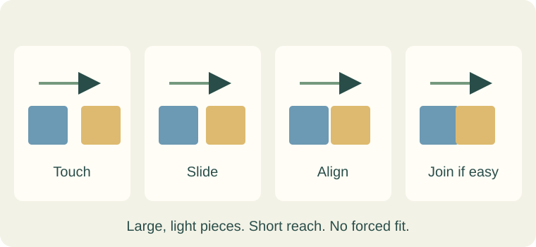

Drawing and object practice
Explore a writing setup, draw with your preferred controls, or read an illustrated object lesson.
Back to everyday tasksWriting has a setup—not just a grip

A line can be a beginning.
For physical practice, place paper on a stable, non-slip surface and support your forearm as needed. Explore a comfortable pen or a grip aid with an OT. Try a short line or a large curve; no standard grip or letter shape is required.
The digital pad works with a mouse, touch or a stylus. You can also move a drawing cursor with buttons or arrow keys. It does not measure pressure, strength or movement quality.
RNOH writing aids guidance. Watch the writing and drawing tutorials.
The guide is a visual option, not a shape you must match.
The drawing is temporary until you download it. No drawing data is uploaded.
Explore a connection one stage at a time


Touch, align, connect—and know your support.
Try large, light pieces on a non-slip surface within easy reach. Explore touching and sliding before lifting or joining. Use easy-fit pieces and stop if connecting them needs force.
Hand function, balance and fatigue differ across CP. An occupational therapist can assess grip aids, stabilising surfaces and the task setup.
A pathway toward a heavier lifting goal
- Define the real object, height, distance, grasp and support needed with a physiotherapist or OT.
- Begin only with the rehearsal and load that they assess as appropriate. The tutorial shows a light empty-box rehearsal.
- If strengthening is appropriate, agree on progression, technique, assistance and stop signs with the clinician. The site does not set a universal safe weight.
- Consider reducing the load, using an assessed transfer aid, or asking for help. Do not carry a load when you need those hands for balance or a mobility aid.
The animation cannot assess your balance, bone health, joint stability or muscle tone. It does not demonstrate that a heavy lift is safe for you.
Open the connecting and lifting tutorials →